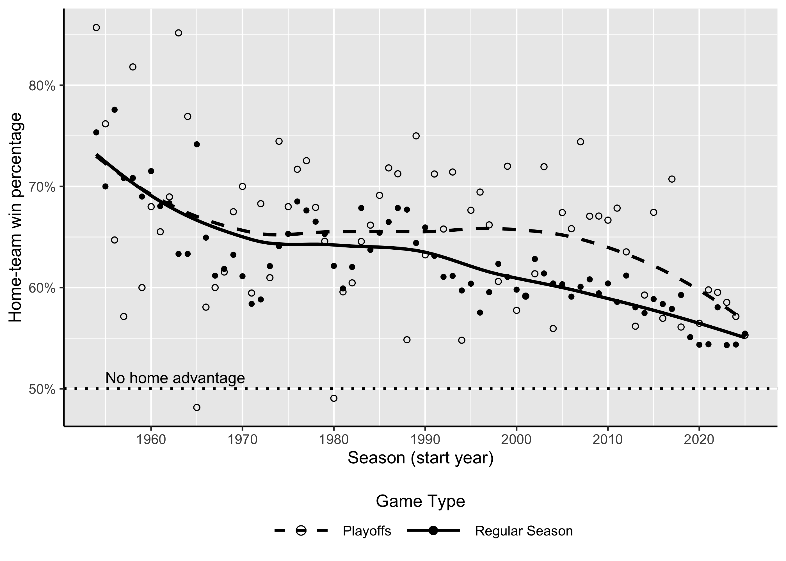
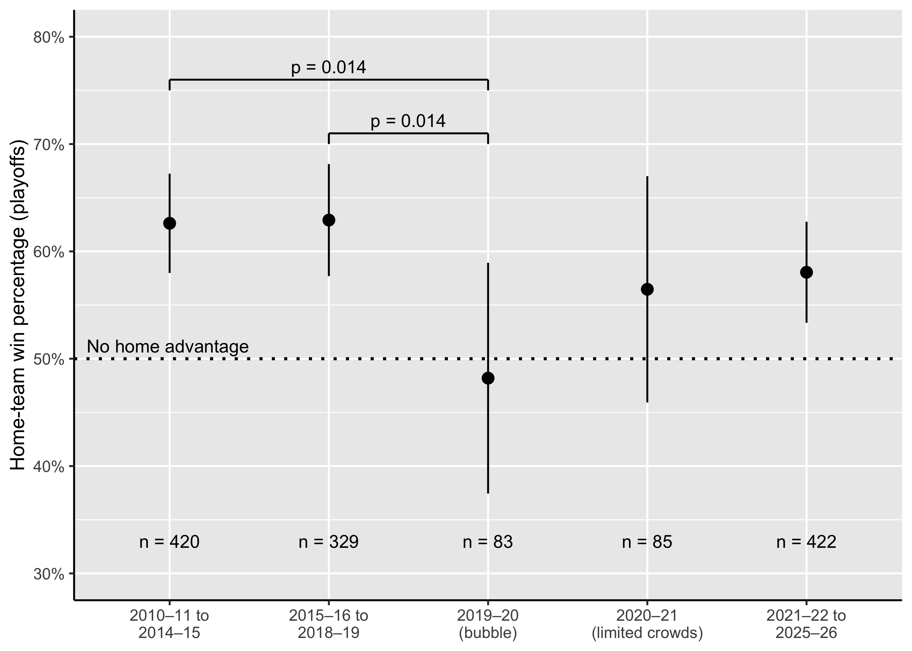
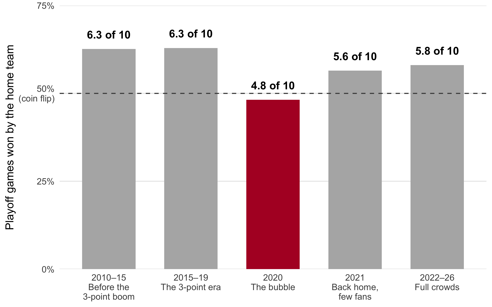

1. Story Summary
The 2020 title is often dismissed as a “Mickey Mouse Ring.” But the bubble removed home-court advantage, which normally lets the higher seed host up to four of seven games. Did losing home advantage matter?
Home teams have long had the upper hand in the NBA, winning about 65% of regular-season games in the 1980s. This advantage has been shrinking, falling to a 59% regular-season win rate in the 2010s, but it stayed larger in the playoffs, where home teams won about 63% of games. Part of that playoff edge is simply that the home team is usually the better team, given that they are seeded higher as a result of greater success during the regular season. The rest is generally credited to the venue itself: the crowd, familiar surroundings, and an opponent who had to travel.
In the bubble, the designated “home” team was still the higher seed. It just had no building and no crowd. Those teams won only 48% of their playoff games, compared with about 63% in the decade before. With only 83 games the exact figure is uncertain, but it sits well below the usual rate. The Lakers earned the top seed in the West and still won the title without the edge that seed normally buys.
Once teams went back to their own arenas, home win rates moved back up: 57% in the 2021 playoffs, when crowds were limited, and 58% from 2022 to 2026. If anything, the bubble made for a harder path for the favourites. It was played at Disney World, but there was nothing Mickey Mouse about it.
2. Version A: Scientific Article
Written for a scientifically literate audience, in the style of a journal article.
Long-term trends in home advantage
NBA game records go back to the league’s first season in 1946–47, but records before 1954–55 are incomplete in the source data, so our analysis begins there. Across the seven decades since, home teams have held a clear advantage in both the regular season as well as playoffs (fig. 1). During every single regular season, home teams have won more than half of their games, although that edge has been on a downward trend; falling from roughly 73% in the mid 1950s to about 55% by the 2020s. Individual playoff seasons varied widely, from 86% in 1954-55 (21 games) to below 50% in a few seasons, but the smoothed trend shows playoff home advantage starting near 73%, holding near 65% from the 1970s through the 2000s, and declining in recent seasons. Playoff values vary more from season to season because postseasons include only 17 to 89 games, compared to the regular season which include 288 to 1,230 games.
Despite being on a downward trend, the home-court advantage is still a significant factor worth considering.
Home advantage in the playoffs plausibly reflects two kinds of factors. First, the home team is usually the better team, since home court goes to the team with the better regular-season record. Second, there are advantages tied to the venue itself: the home team does not travel, is familiar with its arena and city, has its usual support structure available, and plays in front of its own crowd. In a normal postseason, these factors always occur together, so their contributions cannot be separated.
The 2020 bubble separated them. The designated home team was still the higher seed, but every team played at the same neutral site, with no crowds, no travel, and no familiar arena. If team quality drives playoff home advantage, bubble home teams should still have won close to the usual 63% of games. If factors related to the venue drive the advantage, their win percentage should fall toward 50%.
The Bubble Experiment
| Period | Games | Home wins | Home win % | p (vs bubble) |
|---|---|---|---|---|
| 2010–11 to 2014–15 | 420 | 263 | 62.6% | 0.014 |
| 2015–16 to 2018–19 | 329 | 207 | 62.9% | 0.014 |
| 2020–21 (limited crowds) | 85 | 48 | 56.5% | 0.283 |
| 2021–22 to 2025–26 | 422 | 245 | 58.1% | 0.098 |

We split the pre-bubble seasons at 2015–16 to check whether home advantage had already shifted with the rise of three-point shooting. The findings suggest no era-specific change in playoff home-court advantage, with a 62.6% home win percentage in 2010–11 to 2014–15 versus 62.9% in 2015–16 to 2018–19 (p = 0.93; Figure 2).
The bubble broke this pattern. Bubble home teams won 48.2% of playoff games (95% CI: 37.4–58.9%), the only period below 50% and significantly lower than both pre-bubble periods (p = 0.014 for each; Table 1). This is the result predicted by the venue explanation: the home team was still the higher seed, but without its own arena it lost its usual edge. Because the confidence interval includes 50%, the data indicate that home advantage disappeared, not that it reversed.
After the bubble, home win percentages moved back toward pre-bubble levels: 56.5% in 2020-21, when teams returned to their own arenas with limited crowds, and 58.1% from 2021-22 onward. However, neither period differed significantly from the bubble (p = 0.28 and p =0.10), so this recovery should be interpreted cautiously.
Limitations
Several caveats apply. First, the bubble produced only 83 playoff games, so its estimate is imprecise: the 95% CI spans roughly 37% to 59%, and the post-bubble periods could not be statistically distinguished from it. Second, the bubble changed more than the venue. Teams lived in isolation, returned from a four-month long layoff, and neither team traveled, so the loss of home advantage cannot be attributed to the arena or crowd alone. Third, the 88 regular-season seeding games played in the bubble did not show a comparable decline (55.7% home wins), although this sample is similarly small. Finally, the bubble was a single event and cannot be repeated, so these results should be read as a natural experiment rather than a controlled test. What drove the longer-term decline in home advantage shown in Figure 1 remains an open question for future work.
(55.7% home wins across 88 games)
Conclusion
Removing the home venue erased the playoff home advantage that higher seeds normally enjoy, while the long-standing advantage before and after the bubble remained largely intact. This pattern is more consistent with venue-related factors than with team quality alone. For the 2020 title, it suggests that the top seeds, including the champion Los Angeles Lakers, competed without the edge their regular-season records would ordinarily have earned, making their path, if anything, more difficult rather than easier. Because this conclusion rests on a single 83-game natural experiment, it should be treated as suggestive rather than definitive
3. Version B: Interactive Explainer
Written for a general audience, in the style of an online sports explainer.
Playing at home has always helped, just less than it used to
Ask any basketball fan and they’ll tell you: it’s easier to win at home. The numbers agree. For as long as the modern NBA has existed, home teams have won more often than they’ve lost, but the edge has been slowly shrinking.
Hover over any dot to see that season’s numbers.
In the playoffs, the edge has usually been bigger. Part of that is simple: in a playoff series, the team with the better record gets to host more games, so the “home” team is usually the better team anyway. The rest comes from the arena itself: the crowd, sleeping in your own bed, and not having to travel.
Normally you can’t separate those two things. In 2020, the NBA accidentally did it for us.
In the bubble, home court vanished
When the pandemic hit, the league finished the 2019–20 season inside a “bubble” at Disney World in Orlando. Every game was played in the same empty arenas. Teams were still labelled “home” and “away”, and the better-seeded team was still the “home” team. But there was no home crowd, no home arena and no travel.
The result: playoff “home” teams won fewer than half their games.

Before the bubble, home teams won about 6 of every 10 playoff games, and that held steady even as the game changed with the three-point boom. In the bubble, it fell to fewer than 5 in 10. Being the better team, it turns out, wasn’t enough on its own; the home arena was doing a lot of the work.
One honest caveat: the bubble playoffs were only 83 games, so the exact number is a rough estimate. But the drop is big enough that it’s very unlikely to be luck alone (see Version A for the statistics).
Once teams went home, the edge crept back
In 2021, teams returned to their own arenas, mostly with few or no fans. Home teams went back to winning more often, and the numbers have stayed in that range since. With so few games in each period, we can’t say for sure how much of the edge has returned. But the one season with no home arenas at all is the one that stands out.
So, was it a Mickey Mouse ring?
The top seeds in 2020, including the champion Lakers, played the playoffs without the home-court edge their regular seasons would normally have earned them. If anything, that made the title harder to win, not easier.
It was played at Disney World, but there was nothing Mickey Mouse about it.
4. Data and Source Note
Source Game records come from NBA Dataset: Box Scores and Stats (1947–Today) by eoinamoore, published on Kaggle (https://www.kaggle.com/datasets/eoinamoore/historical-nba-data-and-player-box-scores). The analysis uses the dataset’s Games.csv file, which contains one row per NBA game, including the home and away teams, final scores, game type and date. The dataset is updated nightly, so a later download may differ slightly; the version used here is included in the project repository.
- Seasons Included: regular-season records before 1954-55 are incomplete in the source data (e.g., 18.of roughly 330 games for 1946-47), so the analysis begins with the 1954-55 season.
- Game Types: games were classified using the type code in the NBA game ID (1= preseason, 2 = regular season, 3 = All-star games, 4 = playoffs). We included in-season tournament games that count toward regular-season standings and excluded preseason, All-star, play-in and NBA Cup final games.
- Season Labels: seasons are labelled by the year they began (e.g., 2018 = 2018-19, including its playoffs, played in 2019).
- Bubble Games: games played between july 30 and October 12, 2020 were classified as bubble games. They are excluded from Figure 1 and analysed separately in Figure 2.
- Statistics: 95% confidence intervals use the normal approximation; differences between periods were tested with two-proportion tests.
Limitations: The dataset records game outcomes only, so it cannot directly measure crowd size, travel or other mechanisms behind some aspects of home advantage. Home-court assignment in the playoffs reflects seeding, so playoff home win rates combine team quality and venue effects.